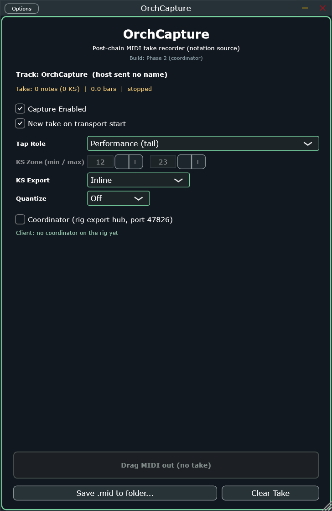

The pipeline's end — every note that reaches here becomes the notation source of truth.
note path · end of chainliveOcap
A transparent tap — it never alters the signal passing through it, it just records what actually reached this
point in the chain and exports a Dorico-ready take. Two roles, run as separate instances: Performance
at the chain tail (the final, real notation source), and Articulation between OrchGate and
OrchNoteMapper (the shared, pre-remap keyswitch zone).
01
The Editor
Top: live take status. Middle: what to capture and how. Bottom: get the take out — drag it straight into
Dorico, save it to disk, or clear it and start over.

1
2
3
4
5
6
7
8
9
10
1
Take status
Track name (from the host), live note/KS count, bar length, transport state — the fastest way to confirm a take is actually recording before you get to the end and find nothing.
2
Capture Enabledenable
Master on/off for recording.
default: On
3
New take on transport startresetOnPlay
Clears the current take automatically every time playback starts, so you don't have to remember to hit Clear Take between runs.
default: On
4
Tap RoletapRole
Performance (tail) · Articulation
Which of the two roles this instance plays. Two instances per instrument track is the normal rig shape, one of each role.
default: Performance
5
KS Zone (min / max)ksZoneMin · ksZoneMax
0–127
Only meaningful in Articulation role (greyed out here in Performance) — the ecosystem's shared unified keyswitch zone, upstream of OrchNoteMapper's per-instrument remap.
default: 12 / 23
6
KS ExportksExportMode
Inline · Separate Track · Exclude · KS Only
How keyswitch notes land in the exported file. Separate Track produces a paired <name> / <name> KS pair, empty KS track omitted.
default: Inline
7
QuantizequantizeGrid
Off · 1/4 · 1/8 · 1/16 · 1/8T · 1/16T · 1/32
Notation-quantizes this instance's own export onsets/releases. Off exports exactly as performed.
default: Off
8
Coordinatorcoordinator
One instance in the whole rig turns this on to become the export hub — binds the coordinator socket, collects every other instance's take, gains "Export All." See §02.
default: Off
9
Drag MIDI out
Drag straight from this box into Dorico (or anywhere else) — no intermediate file needed for a quick check.
10
Save .mid / Clear Take
Save writes the current take to disk. Clear Take wipes it without waiting for a transport-start reset.
Real capture of the Standalone build, Performance role, Coordinator off — note the KS Zone fields greyed out (Articulation-only).
02
Coordinator Role
Turning Coordinator on reveals 3 more real parameters, not visible in the default capture above — this
instance becomes the one shared merge hub for the whole rig, binding :47826.
Parameter
Choices / Range
Purpose
mergedContent
Notes + KS · Notes only · KS only
Which tracks the merged export keeps
autoSaveOnStop
Off / On
Writes the merged rig SMF to the auto-save folder on every transport stop — hands-free capture runs
lookaheadCompensationCc
0–127 (0 = off), default 113
Reads a constant output-delay value (in beats) from a pre-capture plugin upstream (e.g. OrchPiano's lookahead engine) — observed only, the CC still passes through untouched
A non-Coordinator instance shows Client: no coordinator on the rig yet until one comes online —
that line, not the Coordinator checkbox itself, is what actually confirms the connection.